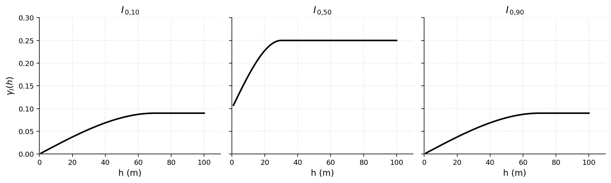
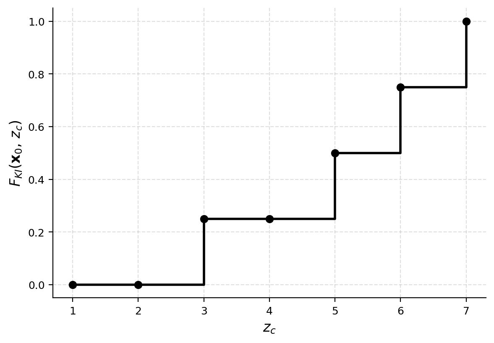
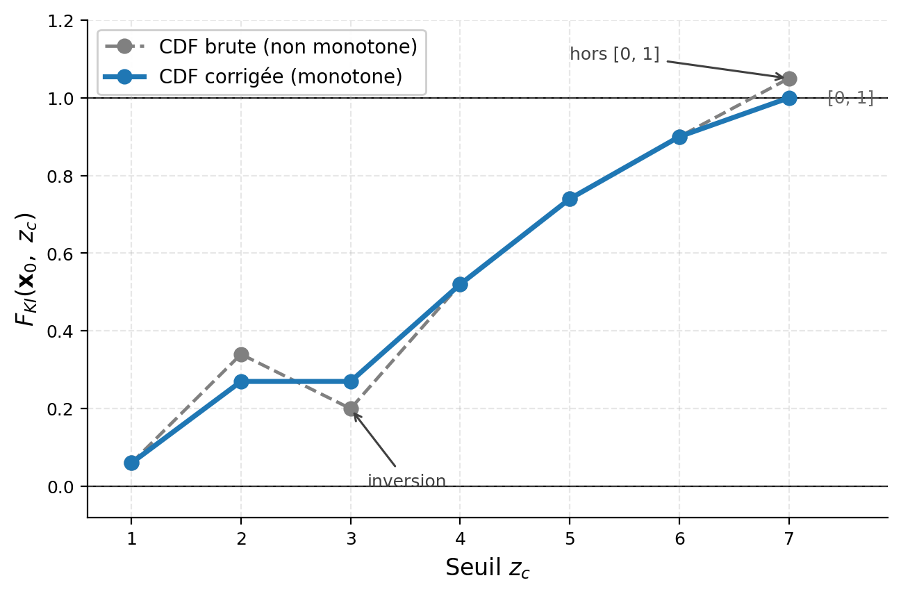
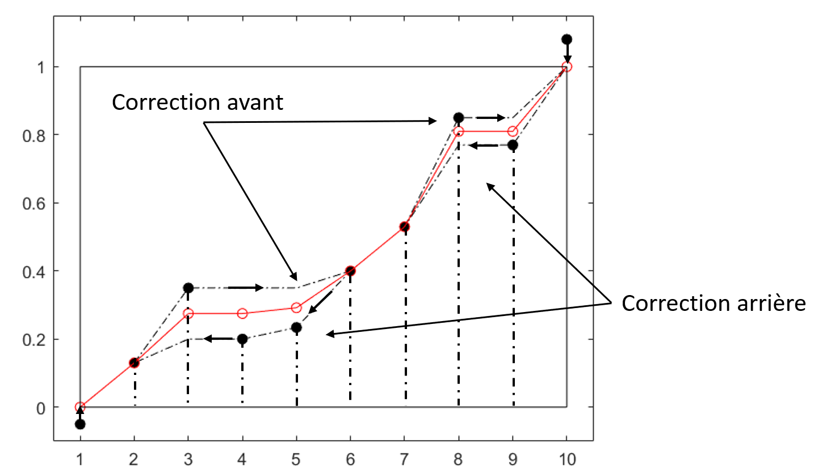
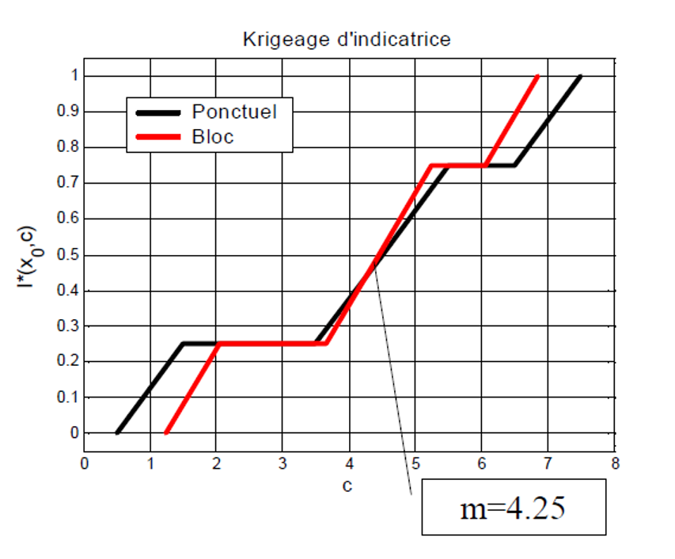
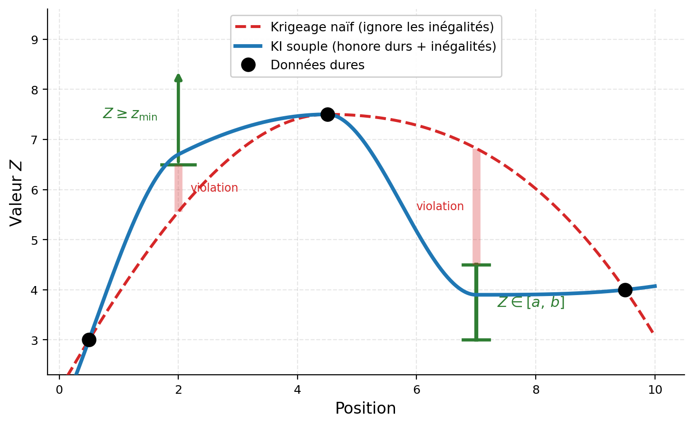
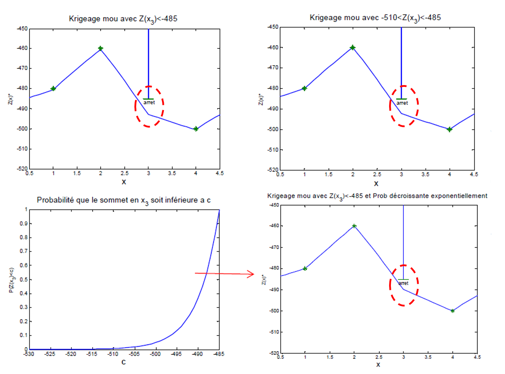

11 Krigeage d’indicatrices
Ce chapitre présente le krigeage d’indicatrices (KI), une méthode géostatistique non linéaire qui estime directement la fonction de répartition locale de la variable à chaque emplacement non échantillonné. Le KI convient aux phénomènes non gaussiens, fortement asymétriques ou dont la continuité spatiale varie selon les classes de valeurs. La méthode est fort utilse pour estimer des probabilités de dépassement d’un seuil, il sert notamment en géologie minière, en hydrogéologie et en génie de l’environnement. Des ateliers interactifs permettent de manipuler le codage, la construction de la fonction de répartition, la correction des relations d’ordre et le changement de support.
À la fin de ce chapitre, vous serez en mesure de :
Décrire la différence entre une méthode de krigeage linéaire (KS, KO, KU, KED) et une méthode non linéaire (KI);
Expliquer les hypothèses à la base du KI;
Coder les indicatrices et construire une fonction de répartition conditionnelle locale;
Corriger les problèmes de relations d’ordre (monotonie et bornage);
Appliquer la correction affine pour le changement de support;
Intégrer des données incertaines (inégalités) dans le KI;
Extraire des résultats du KI les grandeurs utiles : probabilités de dépassement, quantiles, espérance et variance conditionnelles.
Ce chapitre s’appuie principalement sur :
11.1 Notations et hypothèses
Le krigeage d’indicatrices est une méthode non paramétrique fondée sur le krigeage de variables indicatrices. Plutôt que d’estimer uniquement l’espérance conditionnelle de la variable régionalisée, il vise à reconstruire, en chaque point du domaine, sa fonction de répartition conditionnelle locale. Cette distribution permet ensuite de calculer différentes grandeurs utiles à la décision, notamment les probabilités de dépassement d’un seuil, les quantiles, la variance conditionnelle ou encore l’espérance d’une fonction de coût.
Cette approche répond directement à la nature de nombreux problèmes décisionnels. En exploitation minière sélective, l’estimation du tonnage et de la teneur récupérables au-delà d’une teneur de coupure \(z_c\) nécessite d’évaluer la proportion locale de blocs pour lesquels \(Z(\mathbf{x})>z_c\). En génie de l’environnement, l’évaluation du risque repose souvent sur la probabilité qu’une concentration dépasse un seuil réglementaire. En mécanique des roches, la stabilité d’une excavation peut être analysée à partir de la probabilité qu’une variable géomécanique, comme la densité de fractures, franchisse un seuil critique.
Dans chacun de ces cas, la grandeur recherchée est une fonction non linéaire de la variable régionalisée. Une estimation ponctuelle obtenue par krigeage simple ou ordinaire ne suffit donc pas, à elle seule, à la déterminer : il faut disposer d’une représentation de la distribution conditionnelle locale.
La géostatistique non linéaire
La quantité recherchée n’est alors plus seulement l’espérance conditionnelle locale, mais la fonction de répartition conditionnelle locale, c’est-à-dire, en chaque point, la distribution de la variable régionalisée conditionnellement aux données observées.
Sous l’hypothèse de multinormalité, cette distribution conditionnelle est gaussienne et entièrement décrite par sa moyenne et sa variance conditionnelles. La moyenne correspond à l’estimation obtenue par krigeage, tandis que la variance conditionnelle correspond à la variance de krigeage. Il est ainsi possible de déduire directement de ces deux paramètres les probabilités de dépassement et les quantiles locaux.
Cette propriété repose toutefois entièrement sur l’hypothèse gaussienne. De plus, la variance de krigeage dépend de la configuration spatiale des données et du modèle de covariance, mais pas des valeurs effectivement observées. Lorsque la distribution est non gaussienne, asymétrique ou comporte des valeurs extrêmes, seuiller l’estimation krigée de \(Z(\mathbf{x})\) ne permet donc pas de restituer correctement les probabilités locales de dépassement. Cette limite motive l’estimation explicite de la fonction de répartition conditionnelle locale par les méthodes de géostatistique non linéaire.
Approches paramétriques et transformations gaussiennes
Lorsque la distribution marginale des données n’est pas normale, une transformation peut être appliquée afin de la rapprocher d’une loi gaussienne, par exemple une transformation logarithmique, une transformation par rangs ou une anamorphose gaussienne. Cette démarche présente toutefois deux limites fondamentales. Premièrement, obtenir une distribution marginale normale ne garantit pas la multinormalité du champ aléatoire, pourtant nécessaire pour que la distribution conditionnelle soit rigoureusement déterminée par la moyenne et la variance de krigeage. Deuxièmement, lorsque la quantité recherchée porte sur un support différent de celui des observations, par exemple des blocs à partir de données ponctuelles, les probabilités estimées au support ponctuel ne peuvent pas être transposées directement au support de bloc sans modéliser l’effet de support.
Pour éviter de spécifier une loi paramétrique pour \(Z\), une approche fondée sur des variables indicatrices a été proposée. Le krigeage d’indicatrices estime directement, pour une série de seuils, les probabilités conditionnelles qui définissent une approximation discrète de la fonction de répartition locale. Il est ainsi qualifié de méthode non paramétrique, bien qu’il repose toujours sur des hypothèses de stationnarité et de continuité spatiale des indicatrices.
Fondements et notations
Soit \(Z(\mathbf{x})\) une variable aléatoire régionalisée. Pour un seuil \(z_c\), on définit la variable indicatrice :
\[ I(\mathbf{x}; z_c) = \begin{cases} 1 & \text{si } Z(\mathbf{x}) \leq z_c, \\ 0 & \text{si } Z(\mathbf{x}) > z_c. \end{cases} \]
On distingue la fonction de répartition marginale (globale), \(F(z_c) = \mathbb{P}(Z(\mathbf{x}) \leq z_c)\), de la fonction de répartition conditionnelle (locale),
\[ F(\mathbf{x}_0; z_c) = \mathbb{P}\big(Z(\mathbf{x}_0) \leq z_c \mid Z(\mathbf{x}_1), \ldots, Z(\mathbf{x}_n)\big). \]
On suppose les indicatrices stationnaires d’ordre deux, ce qui implique que l’espérance de l’indicatrice est constante, \(\mathbb{E}[I(\mathbf{x}; z_c)] = F(z_c)\), et que la covariance des indicatrices ne dépend que du vecteur de séparation \(\mathbf{h}\), \(\operatorname{Cov}(I(\mathbf{x}; z_c), I(\mathbf{x}+\mathbf{h}; z_c)) = C_I(\mathbf{h}; z_c)\).
🧮 Atelier interactif 11.1 — Codage de \(Z\) en indicatrices
Le codage transforme le champ continu \(Z(\mathbf{x})\) en un champ d’indicatrices \(I(\mathbf{x}; z_c) = \mathbf{1}\{Z(\mathbf{x}) \leq z_c\}\) pour un seuil \(z_c\). À gauche, le champ continu et ses 20 données; à droite, le même champ codé en binaire (1 si \(Z \leq z_c\), 0 sinon), qui se redessine à chaque déplacement du seuil. Le KI krigera ensuite ces indicatrices.
11.2 Krigeage ordinaire d’indicatrices
Le krigeage fournit le meilleur estimateur linéaire sans biais d’une variable régionalisée, au sens où il minimise la variance de l’erreur d’estimation. Il ne correspond toutefois pas nécessairement à l’espérance conditionnelle, qui constitue l’estimateur optimal parmi toutes les fonctions possibles des données.
Le krigeage d’indicatrices consiste à appliquer ce principe à une variable binaire définie pour un seuil \(z_c\). Pour un seuil fixé, on transforme \(Z(\mathbf{x})\) en l’indicatrice suivante :
\[ I(\mathbf{x};z_c)= \begin{cases} 1, & \text{si } Z(\mathbf{x}) \leq z_c, \\ 0, & \text{si } Z(\mathbf{x}) > z_c. \end{cases} \]
Au point à estimer \(\mathbf{x}_0\), l’espérance conditionnelle de cette indicatrice est exactement la probabilité recherchée :
\[ \mathbb{E}\left[I(\mathbf{x}_0;z_c)\mid \text{données}\right] = \mathbb{P}\left(Z(\mathbf{x}_0)\leq z_c\mid \text{données}\right). \]
Le krigeage d’indicatrices cherche donc à estimer cette probabilité à partir des indicatrices observées aux \(n\) points d’échantillonnage :
\[ i(\mathbf{x}_i;z_c)= \begin{cases} 1, & \text{si } Z(\mathbf{x}_i)\leq z_c, \\ 0, & \text{si } Z(\mathbf{x}_i)>z_c. \end{cases} \]
Pour le krigeage ordinaire d’indicatrices, l’estimateur au point \(\mathbf{x}_0\) s’écrit
\[ I^*(\mathbf{x}_0;z_c) = \sum_{i=1}^{n}\lambda_i(z_c)\,i(\mathbf{x}_i;z_c), \]
sous la contrainte
\[ \sum_{i=1}^{n}\lambda_i(z_c)=1. \]
Les poids \(\lambda_i(z_c)\) sont déterminés à partir du variogramme des indicatrices associé au seuil \(z_c\). L’estimation obtenue est interprétée comme une estimation de la probabilité conditionnelle :
\[ I^*(\mathbf{x}_0;z_c) \approx \mathbb{P}\left(Z(\mathbf{x}_0)\leq z_c\mid \text{données}\right). \]
Cette estimation demeure une approximation linéaire de l’espérance conditionnelle. Elle ne coïncide avec la probabilité conditionnelle exacte que dans les cas particuliers où cette probabilité est une fonction affine des indicatrices observées, la contrainte \(\sum_i \lambda_i(z_c) = 1\) autorisant la reproduction du terme constant et assurant l’absence de biais.
Procédure
Le KI se déroule en quatre étapes.
Codage des observations. Pour un seuil \(z_c\), chaque observation \(Z(\mathbf{x}_i)\) est transformée en une indicatrice : \(I(\mathbf{x}_i; z_c)=1\) si \(Z(\mathbf{x}_i)\leq z_c\), et \(I(\mathbf{x}_i; z_c)=0\) sinon.
Modélisation du variogramme d’indicatrices. Pour le seuil \(z_c\), on calcule le variogramme expérimental et on lui ajuste un modèle théorique admissible, qui décrit la continuité spatiale de la variable binaire \(I(\mathbf{x}; z_c)\) (Figure 11.1).
Krigeage de l’indicatrice. L’indicatrice est krigée au point à estimer \(\mathbf{x}_0\). La valeur obtenue, \(I^*(\mathbf{x}_0; z_c)\), fournit une estimation de la probabilité conditionnelle \(\mathbb{P}\left(Z(\mathbf{x}_0)\leq z_c \mid Z(\mathbf{x}_1),\ldots,Z(\mathbf{x}_n) \right)\).
Répétition pour plusieurs seuils. La procédure est répétée pour une série de seuils ordonnés \(z_{c,1}<z_{c,2}<\cdots<z_{c,K}\). Les probabilités estimées à ces seuils construisent une approximation discrète de la fonction de répartition conditionnelle locale, notée \(\widehat{F}_{KI}(\mathbf{x}_0; z)\).

Calcul des quantités
Kriger l’indicatrice au seuil \(z_c\) revient exactement à estimer la fonction de répartition conditionnelle à ce seuil. En notant \(\mathcal{D}\) l’ensemble des données disponibles,
\[ \widehat{F}_{KI}(\mathbf{x}_0;z_{c,k}) = I^*(\mathbf{x}_0;z_{c,k}) \approx \mathbb{P}\left(Z(\mathbf{x}_0)\leq z_{c,k}\mid \mathcal{D}\right), \]
où le chapeau marque une quantité estimée et l’étoile de \(I^*\) l’estimateur de krigeage dont elle provient. La probabilité conditionnelle de dépassement d’un seuil \(z_c\) s’obtient par complémentarité :
\[ \widehat{\mathbb{P}}\left(Z(\mathbf{x}_0)>z_c\mid \mathcal{D}\right) = 1-\widehat{F}_{KI}(\mathbf{x}_0;z_c). \]
Le quantile conditionnel estimé d’ordre \(p\) est défini par
\[ \widehat{q}_p(\mathbf{x}_0) = \inf\left\{ z: \widehat{F}_{KI}(\mathbf{x}_0;z)\geq p \right\}. \]
Après interpolation entre les seuils et modélisation des queues de distribution, l’espérance conditionnelle s’estime à partir de la fonction de répartition :
\[ \widehat{\mathbb{E}}_{KI}\left[Z(\mathbf{x}_0)\right] = \int_{-\infty}^{+\infty} z\,\mathrm{d}\widehat{F}_{KI}(\mathbf{x}_0;z), \]
et la variance conditionnelle par
\[ \widehat{\operatorname{Var}}_{KI}\left[Z(\mathbf{x}_0)\right] = \int_{-\infty}^{+\infty} z^2\,\mathrm{d}\widehat{F}_{KI}(\mathbf{x}_0;z) - \left( \int_{-\infty}^{+\infty} z\,\mathrm{d}\widehat{F}_{KI}(\mathbf{x}_0;z) \right)^2. \]
En pratique, la fonction de répartition n’étant estimée qu’en un nombre fini de seuils, ces intégrales sont évaluées numériquement. En notant
\[ \widehat{p}_k(\mathbf{x}_0) = \widehat{F}_{KI}(\mathbf{x}_0;z_{c,k}) - \widehat{F}_{KI}(\mathbf{x}_0;z_{c,k-1}) \]
la probabilité estimée de l’intervalle \(]z_{c,k-1},z_{c,k}]\), l’espérance s’approxime par
\[ \widehat{\mathbb{E}}_{KI}\left[Z(\mathbf{x}_0)\right] \approx \sum_{k=1}^{K} \widetilde{z}_k\,\widehat{p}_k(\mathbf{x}_0), \]
où \(\widetilde{z}_k\) est une valeur représentative de l’intervalle, par exemple son centre. La variance s’approxime alors par
\[ \widehat{\operatorname{Var}}_{KI}\left[Z(\mathbf{x}_0)\right] \approx \sum_{k=1}^{K} \widetilde{z}_k^2\,\widehat{p}_k(\mathbf{x}_0) - \left[ \sum_{k=1}^{K} \widetilde{z}_k\,\widehat{p}_k(\mathbf{x}_0) \right]^2. \]
Exemple de calcul
On considère quatre valeurs observées \(Z_1, \ldots, Z_4\) aux positions \(\mathbf{x}_1, \ldots, \mathbf{x}_4\), formant un rectangle. On veut un krigeage d’indicatrices au point \(\mathbf{x}_0\), situé au centre :
| \(Z_1 = 2{,}2\) | \(Z_2 = 5{,}1\) | |
| \(\mathbf{x}_0\) | ||
| \(Z_3 = 6{,}4\) | \(Z_4 = 4{,}7\) |
On choisit les seuils \(z_c = 1, 2, 3, 4, 5, 6, 7\). Par symétrie, le krigeage ordinaire donne les poids \(\lambda_i = \tfrac{1}{4}\) pour tout \(i\) et tout \(z_c\). Le krigeage d’indicatrices donne alors \(I^*(\mathbf{x}_0; z_c) = \sum_{i=1}^4 \tfrac{1}{4} I(\mathbf{x}_i; z_c)\) :
| \(z_c\) | \(I(\mathbf{x}_1; z_c)\) | \(I(\mathbf{x}_2; z_c)\) | \(I(\mathbf{x}_3; z_c)\) | \(I(\mathbf{x}_4; z_c)\) | \(I^*(\mathbf{x}_0; z_c) = \widehat{F}_{KI}(z_c)\) |
|---|---|---|---|---|---|
| 1 | 0 | 0 | 0 | 0 | 0 |
| 2 | 0 | 0 | 0 | 0 | 0 |
| 3 | 1 | 0 | 0 | 0 | 0,25 |
| 4 | 1 | 0 | 0 | 0 | 0,25 |
| 5 | 1 | 0 | 0 | 1 | 0,50 |
| 6 | 1 | 1 | 0 | 1 | 0,75 |
| 7 | 1 | 1 | 1 | 1 | 1 |
Cette table est une approximation discrète de la fonction de répartition conditionnelle \(\widehat{F}_{KI}(\mathbf{x}_0; z_c) \approx \mathbb{P}(Z(\mathbf{x}_0) \leq z_c)\). La Figure 11.2 la présente sous forme de graphique.

1. Probabilités de dépassement
La probabilité estimée que \(Z\) dépasse un seuil est \(\widehat{\mathbb{P}}(Z_0 > z_c) = 1 - \widehat{F}_{KI}(\mathbf{x}_0; z_c)\).
Pour \(z_c = 3{,}5\), la fonction de répartition est constante entre les seuils 3 et 4 (\(\widehat{F}_{KI}(3) = \widehat{F}_{KI}(4) = 0{,}25\)), donc par interpolation \(\widehat{F}_{KI}(3{,}5) = 0{,}25\), et \(\widehat{\mathbb{P}}(Z_0 > 3{,}5) = 1 - 0{,}25 = 0{,}75\).
Pour \(z_c = 4{,}3\), on interpole linéairement entre les seuils 4 et 5 :
\[ \widehat{F}_{KI}(\mathbf{x}_0; 4{,}3) = 0{,}25 + \frac{4{,}3 - 4}{5 - 4}(0{,}50 - 0{,}25) = 0{,}25 + 0{,}3 \times 0{,}25 = 0{,}325, \]
d’où \(\widehat{\mathbb{P}}(Z_0 > 4{,}3) = 1 - 0{,}325 = 0{,}675\).
2. Médiane et percentiles
La médiane estimée \(\widehat{q}_{0{,}5}\) satisfait \(\widehat{F}_{KI}(\mathbf{x}_0; \widehat{q}_{0{,}5}) = 0{,}5\). Comme \(\widehat{F}_{KI}(\mathbf{x}_0; 5) = 0{,}5\), la médiane est \(\widehat{q}_{0{,}5} = 5\). Pour le 65e percentile, on cherche \(z\) tel que \(\widehat{F}_{KI}(\mathbf{x}_0; z) = 0{,}65\), ce qui tombe entre les seuils 5 (\(\widehat{F}_{KI} = 0{,}50\)) et 6 (\(\widehat{F}_{KI} = 0{,}75\)) :
\[ \widehat{q}_{0{,}65} = 5 + \frac{0{,}65 - 0{,}50}{0{,}75 - 0{,}50}(6 - 5) = 5{,}6. \]
3. Espérance conditionnelle
La fonction de répartition discrétisée définit des classes de valeurs, chacune de probabilité estimée \(\widehat{p}_k = \widehat{F}_{KI}(z_{c,k}) - \widehat{F}_{KI}(z_{c,k-1})\) et de milieu \(m_k\) (la valeur représentative \(\widetilde{z}_k\) des formules précédentes) :
| Classe \(k\) | Intervalle | Milieu \(m_k\) | \(\widehat{F}_{KI}(z_{c,k-1})\) | \(\widehat{F}_{KI}(z_{c,k})\) | \(\widehat{p}_k\) |
|---|---|---|---|---|---|
| 1 | \((-\infty, 1]\) | 0,5 | 0 | 0 | 0 |
| 2 | \((1, 2]\) | 1,5 | 0 | 0 | 0 |
| 3 | \((2, 3]\) | 2,5 | 0 | 0,25 | 0,25 |
| 4 | \((3, 4]\) | 3,5 | 0,25 | 0,25 | 0 |
| 5 | \((4, 5]\) | 4,5 | 0,25 | 0,50 | 0,25 |
| 6 | \((5, 6]\) | 5,5 | 0,50 | 0,75 | 0,25 |
| 7 | \((6, 7]\) | 6,5 | 0,75 | 1 | 0,25 |
L’espérance conditionnelle estimée est
\[ \widehat{\mathbb{E}}_{KI}[Z_0] = \sum_{k=1}^{7} \widehat{p}_k \, m_k = 0{,}25 \times 2{,}5 + 0 \times 3{,}5 + 0{,}25 \times 4{,}5 + 0{,}25 \times 5{,}5 + 0{,}25 \times 6{,}5 = 4{,}75. \]
À titre de comparaison, le krigeage ordinaire direct de la teneur donnerait \(Z_0^* = \tfrac{1}{4}(2{,}2 + 5{,}1 + 6{,}4 + 4{,}7) = 4{,}6\). L’écart vient de ce que le KI interpole la distribution de façon non linéaire.
Remarque. Le choix de la valeur représentative de la dernière classe (ici \(m_7 = 6{,}5\)) influence l’espérance. En pratique, on prend la valeur maximale des données ou la borne supérieure de la dernière classe.
4. Variance conditionnelle
\[ \widehat{\mathbb{E}}_{KI}[Z_0^2] = \sum_{k} \widehat{p}_k \, m_k^2 = 0{,}25\,(2{,}5^2 + 4{,}5^2 + 5{,}5^2 + 6{,}5^2) = 24{,}75 \]
\[ \widehat{\operatorname{Var}}_{KI}[Z_0] = 24{,}75 - (4{,}75)^2 = 24{,}75 - 22{,}5625 = 2{,}1875 \]
5. Espérance associée à un coût
Pour une fonction de coût \(C(Z) = Z^2\), on a \(\widehat{\mathbb{E}}[C(Z_0)] = \sum_k \widehat{p}_k \, C(m_k) = \widehat{\mathbb{E}}_{KI}[Z_0^2] = 24{,}75\).
Considérations théoriques et pratiques
Le codage binaire entraîne une perte d’information : pour un seuil donné, deux valeurs situées du même côté du seuil reçoivent la même indicatrice, quelle que soit leur distance à celui-ci. Le cokrigeage simultané des indicatrices de tous les seuils tiendrait compte de leurs dépendances croisées et compenserait en partie cette perte, mais la modélisation de tous les variogrammes directs et croisés devient vite trop lourde en pratique.
Les variogrammes d’indicatrices sont peu sensibles à l’amplitude des valeurs extrêmes, puisque les données sont ramenées à 0 ou 1. Leur estimation peut toutefois devenir instable aux seuils extrêmes, lorsque très peu d’observations tombent dans l’une des deux classes. De plus, tous les modèles admissibles pour une variable continue ne le sont pas pour une indicatrice : le modèle gaussien, en particulier, est à éviter pour les variogrammes d’indicatrices.
En pratique, on utilise souvent de 5 à 10 seuils. Des quantiles comme les déciles répartissent les observations de façon relativement équilibrée entre les classes, mais le choix doit tenir compte de la taille de l’échantillon, de la forme de la distribution et des valeurs critiques du problème. Les quantiles très faibles ou très élevés sont à manier avec prudence, le faible effectif d’une classe rendant le variogramme difficile à estimer.
Un atout majeur du KI est sa souplesse structurale : chaque seuil peut recevoir une continuité spatiale propre — portée, anisotropie, effet de pépite —, ce qui permet de représenter une organisation différente pour les faibles et les fortes teneurs. Les modèles des différents seuils doivent néanmoins rester cohérents entre eux, pour limiter les violations des relations d’ordre.
C’est là le dernier point, et le plus contraignant. La fonction de répartition estimée doit rester bornée,
\[0 \leq \widehat{F}_{KI}(\mathbf{x}_0;z_c) \leq 1,\]
et non décroissante : pour \(z_{c,k}<z_{c,k+1}\),
\[\widehat{F}_{KI}(\mathbf{x}_0;z_{c,k}) \leq \widehat{F}_{KI}(\mathbf{x}_0;z_{c,k+1}).\]
Or le krigeage se fait seuil par seuil, indépendamment : les probabilités krigées peuvent sortir de \([0,1]\) ou violer la monotonie, à cause de poids négatifs ou de variogrammes incompatibles d’un seuil à l’autre. Ces anomalies doivent être corrigées a posteriori.
11.3 Problèmes de relation d’ordre
Rien ne garantit que le krigeage d’indicatrices produise une fonction de répartition strictement croissante et bornée sur \([0,1]\). La fonction estimée \(\widehat{F}_{KI}(\mathbf{x}_0; z)\) doit pourtant rester entre 0 et 1 (\(0 \leq \widehat{F}_{KI} \leq 1\)) et croître avec le seuil (\(\widehat{F}_{KI}(\mathbf{x}_0; z) \leq \widehat{F}_{KI}(\mathbf{x}_0; z')\) si \(z \leq z'\)).
Il faut donc vérifier, avant tout calcul, que \(\widehat{F}_{KI}(\mathbf{x}_0; z)\) respecte ces contraintes. En pratique, on utilise souvent l’heuristique simple décrite ci-dessous. La Figure 11.3 montre une violation marquée de ces propriétés.

Correction par moyenne des balayages croissant et décroissant
Cette heuristique régularise la fonction estimée en quatre étapes.
Troncature des bornes. On ramène à 0 les valeurs négatives de \(\widehat{F}_{KI}(\mathbf{x}_0; z_c)\) et à 1 celles qui dépassent 1.
Balayage vers l’avant. Pour des seuils ordonnés \(z_{c,1} < z_{c,2} < \cdots < z_{c,p}\) :
\[ \widehat{F}_{KI,\text{avant}}(\mathbf{x}_0; z_{c,1}) = \max\big(0,\, \widehat{F}_{KI}(\mathbf{x}_0; z_{c,1})\big), \]
puis, pour \(i = 2, \ldots, p\) :
\[ \widehat{F}_{KI,\text{avant}}(\mathbf{x}_0; z_{c,i}) = \max\big(\widehat{F}_{KI,\text{avant}}(\mathbf{x}_0; z_{c,i-1}),\, \widehat{F}_{KI}(\mathbf{x}_0; z_{c,i})\big). \]
- Balayage vers l’arrière, en partant du seuil le plus élevé :
\[ \widehat{F}_{KI,\text{arr}}(\mathbf{x}_0; z_{c,p}) = \min\big(1,\, \widehat{F}_{KI}(\mathbf{x}_0; z_{c,p})\big), \]
puis, pour \(i = p-1, \ldots, 1\) :
\[ \widehat{F}_{KI,\text{arr}}(\mathbf{x}_0; z_{c,i}) = \min\big(\widehat{F}_{KI}(\mathbf{x}_0; z_{c,i}),\, \widehat{F}_{KI,\text{arr}}(\mathbf{x}_0; z_{c,i+1})\big). \]
- Moyenne des deux balayages. La fonction corrigée finale est la moyenne arithmétique :
\[ \widehat{F}_{KI,\text{corr}}(\mathbf{x}_0; z_{c,i}) = \tfrac{1}{2} \big( \widehat{F}_{KI,\text{avant}}(\mathbf{x}_0; z_{c,i}) + \widehat{F}_{KI,\text{arr}}(\mathbf{x}_0; z_{c,i}) \big). \]
La moyenne de deux suites non décroissantes l’est aussi : la fonction corrigée est donc bien monotone et comprise dans \([0, 1]\).
Exemple de correction
Le tableau suivant applique ces corrections à une série présentant des anomalies de monotonie et de bornage :
| Seuil \(z_c\) | \(\widehat{F}_{KI}(\mathbf{x}_0; z_c)\) | \(\widehat{F}_{KI,\text{avant}}\) | \(\widehat{F}_{KI,\text{arr}}\) | \(\widehat{F}_{KI,\text{corr}}\) |
|---|---|---|---|---|
| 1 | 0,00 | 0,00 | 0,00 | 0,00 |
| 2 | 0,13 | 0,13 | 0,13 | 0,13 |
| 3 | 0,24 | 0,24 | 0,234 | 0,237 |
| 4 | 0,238 | 0,24 | 0,234 | 0,237 |
| 5 | 0,234 | 0,24 | 0,234 | 0,237 |
| 6 | 0,237 | 0,24 | 0,237 | 0,2385 |
| 7 | 0,53 | 0,53 | 0,53 | 0,53 |
| 8 | 0,79 | 0,79 | 0,77 | 0,78 |
| 9 | 0,77 | 0,79 | 0,77 | 0,78 |
| 10 | 1,00 | 1,00 | 1,00 | 1,00 |
Analyse visuelle
La Figure 11.4 illustre l’effet de ces ajustements. Le balayage avant impose une fonction croissante en remplaçant chaque valeur par le maximum rencontré jusqu’à présent; le balayage arrière fait l’inverse, en partant du seuil maximal. La moyenne des deux donne une fonction de répartition qui respecte à la fois les bornes \([0, 1]\) et la monotonie.

🧮 Atelier interactif 11.2 — Correction de la relation d’ordre
Le KI krige chaque seuil indépendamment : la fonction de répartition locale brute (points noirs) peut sortir de \([0, 1]\) ou décroître. Observez la correction par moyenne des deux balayages, étape par étape : le balayage avant (montée, en rouge, flèches ↑) impose une fonction non décroissante du bas vers le haut; le balayage arrière (descente, en vert, flèches ↓) du haut vers le bas; la fonction corrigée (bleu) est la moyenne des deux, monotone et dans \([0, 1]\). Augmentez le « désordre » pour exagérer les violations.
11.4 Modèles de changement de support
Les décisions se prennent presque toujours sur un support différent de celui des données. Or, la fonction estimée \(\widehat{F}_{KI}\) ne s’étend jusqu’ici que sur le support ponctuel des observations.
Prenons une mine. La probabilité qu’un bloc de 125 m³ atteigne une teneur de coupure n’est pas la même que pour une carotte de 1 m. La variance varie selon le support, donc les fonctions de répartition aussi. Il faut donc corriger \(\widehat{F}_{KI}\) pour tenir compte du changement de support.
Une erreur classique consiste à remplacer le krigeage ponctuel du KI par un krigeage de bloc. Mais \(I^*(\mathbf{x}_0; z_c)\) estime la probabilité moyenne que les points du bloc soient sous \(z_c\), et non la probabilité que la moyenne du bloc soit sous \(z_c\). La distinction est fondamentale : la probabilité n’est pas un opérateur linéaire de la moyenne, pas plus que le logarithme ne l’est (\(\log(\text{moyenne}) \neq \text{moyenne des } \log\)).
Correction affine
La correction affine, la plus utilisée avec le KI, suppose que la distribution des blocs est celle des points, à une contraction près. Cette contraction est le rapport des écarts-types des blocs et des points :
\[ \widehat{F}_{Z_v}(z) = \widehat{F}_Z \left( m + \frac{z - m}{\sqrt{\dfrac{D^2(v \mid G)}{D^2(\cdot \mid G)}}} \right) \]
où \(m = \widehat{\mathbb{E}}_{KI}[Z_0]\) est la moyenne locale estimée par KI au support ponctuel, \(D^2(v \mid G)\) la variance de dispersion au support du bloc, et \(D^2(\cdot \mid G)\) celle au support ponctuel. Ici \(\widehat{F}_Z\) est la fonction de répartition estimée au support ponctuel (le \(\widehat{F}_{KI}\) des sections précédentes) et \(\widehat{F}_{Z_v}\) son homologue au support du bloc.
Exemple numérique
On reprend une distribution conditionnelle estimée par KI d’espérance \(m = 6{,}33\), avec un rapport de variances \(D^2(v \mid G)/D^2(\cdot \mid G) = 0{,}8\). On cherche la probabilité que le bloc dépasse 9. Le seuil ponctuel équivalent est :
\[ z_c' = \frac{1}{\sqrt{0{,}8}} (9 - 6{,}33) + 6{,}33 \approx 9{,}31. \]
La probabilité de dépasser ce seuil au point vaut alors \(\widehat{\mathbb{P}}(Z_v > 9) = 1 - (0{,}78 + 0{,}31 \times (1 - 0{,}78)) = 0{,}15\). La probabilité ponctuelle de dépasser 9, elle, est plus élevée : \(\widehat{\mathbb{P}}(Z > 9) = 1 - 0{,}78 = 0{,}22\). Le bloc, plus lissé, dépasse le seuil moins souvent que le point.
Limitations et remarques
La correction affine ne tient pas pour des changements de support trop importants. On la réserve aux cas où le rapport \(D^2(v \mid G)/D^2(\cdot \mid G)\) reste de l’ordre de 0,7 ou plus. Au-delà, la forme de l’histogramme se déforme trop et la méthode perd en validité. La Figure 11.5 montre son effet sur la fonction de répartition : l’écart entre la courbe noire et la courbe rouge n’est qu’une contraction d’amplitude, proportionnelle au rapport des variances.
Une mise en garde s’impose lorsqu’on applique la correction affine localement, en remplaçant le rapport global par le rapport local propre à chaque bloc. Il a été montré que le coefficient global est en moyenne supérieur au coefficient local : la distribution des teneurs de blocs paraît alors plus sélective qu’elle ne l’est, ce qui biaise l’évaluation des ressources récupérables. Plus fondamentalement, une méthode non paramétrique comme le KI ne reproduit pas, à elle seule, un changement de support, ce qui nécessite de modéliser explicitement les distributions bivariées.
La méthode ne convient pas non plus lorsque les blocs sont trop grands par rapport à la structure spatiale : le théorème central limite tire alors l’histogramme local vers la normale. Pour ces changements de support délicats, mieux vaut recourir à des simulations géostatistiques ponctuelles conditionnelles : en les agrégeant à l’échelle des blocs, on estime directement la fonction de répartition des supports volumétriques.

La correction affine reste malgré tout une solution simple et robuste pour adapter le KI aux cas où support d’observation et support d’estimation diffèrent.
🧮 Atelier interactif 11.3 — Changement de support affine
\(Z_v = m + \sqrt{f}\,(Z_{\text{pt}} - m)\) avec \(f = \operatorname{Var}(Z_v)/\operatorname{Var}(Z_{\text{pt}})\). La fonction de répartition du bloc est plus resserrée que celle des points (les queues sont atténuées).
11.5 Krigeage simple d’indicatrices
Le krigeage simple d’indicatrices suppose que la fonction de répartition marginale est connue et stationnaire. Pour un seuil \(z_c\), l’espérance de l’indicatrice est alors la proportion globale :
\[F_Z(z_c) = \mathbb{P}(Z(\mathbf{x}) \le z_c)\]
Cette proportion joue le rôle de moyenne connue du champ d’indicatrices. L’estimateur de krigeage simple de l’indicatrice au point \(\mathbf{x}\) s’écrit :
\[I^*(\mathbf{x}; z_c) = \sum_{i=1}^{n} \lambda_i I(\mathbf{x}_i; z_c) + \left(1 - \sum_{i=1}^{n} \lambda_i\right) F_Z(z_c)\]
Les poids \(\lambda_i\) se calculent comme au krigeage simple habituel, mais sur des indicatrices, avec la fonction de répartition globale comme moyenne. Cet estimateur approche l’espérance conditionnelle :
\[I^*(\mathbf{x}; z_c) \approx \mathbb{E}[I(\mathbf{x}; z_c) \mid I(\mathbf{x}_1; z_c), \ldots, I(\mathbf{x}_n; z_c)] = \mathbb{P}(Z(\mathbf{x}) \le z_c \mid Z(\mathbf{x}_1), \ldots, Z(\mathbf{x}_n))\]
Il fournit donc directement une estimation de la fonction de répartition conditionnelle locale au seuil \(z_c\).
Le krigeage simple d’indicatrices est stable. Quand l’information locale est faible ou peu corrélée, l’estimation tend d’elle-même vers la proportion globale \(F_Z(z_c)\). C’est ce qui le rend plus robuste que le krigeage ordinaire d’indicatrices sur des données éparses ou dans des voisinages peu informatifs.
À la limite d’un effet de pépite pur, sans aucune corrélation spatiale, les poids s’annulent et l’estimation se réduit à :
\[I^*(\mathbf{x}; z_c) = F_Z(z_c)\]
Il n’y a alors plus d’information locale exploitable : impossible de discriminer spatialement les probabilités de dépassement, on retombe sur la proportion globale.
11.6 Applications du krigeage d’indicatrices
Le krigeage d’indicatrices se justifie lorsque la grandeur recherchée est une fonction non linéaire de la teneur, hors de portée du krigeage ordinaire (KO) ou simple (KS), qui estiment la teneur moyenne.
Le KO et le KS estiment la valeur moyenne \(Z_0^*\) : une estimation lissée, optimale au sens de l’erreur quadratique. Or beaucoup de questions pratiques ne portent pas sur la moyenne, mais sur une fonction non linéaire de la teneur.
- Ce sol dépasse-t-il le seuil réglementaire de contamination? On veut \(\mathbb{P}(Z(\mathbf{x}_0) > z_c)\), pas \(Z_0^*\).
- Quel tonnage de minerai dépasse la teneur de coupure, et à quelle teneur? On veut le tonnage récupérable \(T(z_c) = 1 - F(z_c)\) et la quantité de métal \(Q(z_c) = \int_{z_c}^{\infty} z \, \mathrm{d}F(z)\), deux intégrales de la distribution locale au-dessus de la coupure.
Sur ces questions, le seuil de la carte du KO (ou KS) fournit une réponse biaisée. Le lissage atténue les valeurs extrêmes et déforme les proportions au-delà du seuil, d’autant plus que la distribution est asymétrique (la loi log-normale, typique des teneurs). Le KI, lui, estime directement la distribution conditionnelle locale \(\widehat{F}_{KI}(\mathbf{x}_0; z)\) : sans hypothèse de loi, il fournit la probabilité de dépassement, la médiane et toute quantité dérivée de la distribution.
L’atelier suivant illustre l’usage phare : délimiter une zone contaminée, où le KI estime la probabilité de dépassement et la quantité de sol contaminé bien mieux qu’un seuillage du KO.
🧮 Atelier interactif 11.4 — Site pollué : KI contre KO
On délimite la zone d’un sol contaminé au-delà d’un seuil réglementaire \(z_c\), à partir de quelques sondages. Comparez la vérité, l’estimation KO (teneur lissée et variance) et la carte KI de \(\mathbb{P}(Z > z_c)\). Basculez entre une loi gaussienne et une loi log-normale (fortement asymétrique) : sur des données très non gaussiennes, seuiller la carte KO sous-estime la zone contaminée, alors que le KI reste proche de la vérité.
11.7 Krigeage avec données d’inégalité, mesures bruitées et données souples
Un avantage important du krigeage d’indicatrices est sa capacité à intégrer des informations qui ne prennent pas nécessairement la forme d’une valeur exacte de \(Z(\mathbf{x})\). Selon la nature des observations, on distingue les données d’inégalité, les mesures directes entachées d’une erreur et les données souples issues d’une source d’information indirecte.
Dans chaque cas, l’information est traitée au niveau des indicatrices associées aux différents seuils. Certaines indicatrices sont connues avec exactitude, tandis que d’autres demeurent inconnues ou sont remplacées par des probabilités comprises entre 0 et 1.
Données d’inégalité
Une donnée d’inégalité ne fournit pas la valeur exacte de \(Z(\mathbf{x}_i)\), mais impose une borne ou un intervalle. Par exemple, un forage réalisé jusqu’à 100 m sans rencontrer un contact géologique indique que la profondeur de ce contact est supérieure à 100 m :
\[ Z(\mathbf{x}_i)>100\text{ m}. \]
Cette information est difficile à intégrer directement dans les formulations standards du krigeage ordinaire ou du krigeage simple, qui attendent une valeur numérique à chaque point. Le krigeage d’indicatrices permet toutefois d’utiliser la partie connue pour chacun des seuils.
De manière générale, supposons que l’on connaisse seulement l’intervalle :
\[ a_i<Z(\mathbf{x}_i)\leq b_i. \]
Pour l’indicatrice définie par
\[ I(\mathbf{x};z_c)= \begin{cases} 1 & \text{si } Z(\mathbf{x})\leq z_c, \\ 0 & \text{si } Z(\mathbf{x})>z_c, \end{cases} \]
le codage est alors :
- \(I(\mathbf{x}_i;z_c)=0\) lorsque \(z_c\leq a_i\);
- \(I(\mathbf{x}_i;z_c)=1\) lorsque \(z_c\geq b_i\);
- \(I(\mathbf{x}_i;z_c)\) demeure inconnu lorsque \(a_i<z_c<b_i\).
Ainsi, la donnée d’inégalité fournit une information exacte pour certains seuils, mais aucune information pour les seuils situés à l’intérieur de l’intervalle d’incertitude.
Considérons, par exemple, la cartographie de la profondeur du toit d’un réservoir pétrolier. Les forages étant coûteux, les données sont rares. Certains forages peuvent être abandonnés après plusieurs centaines de mètres sans avoir atteint le toit du réservoir. Une estimation par krigeage ordinaire peut alors contredire cette information partielle en plaçant le toit à une profondeur inférieure à celle déjà forée sans rencontre, comme l’illustre la Figure 11.6.
Supposons que l’on sache que :
\[ Z(\mathbf{x}_i)>500\text{ m}. \]
Pour tout seuil \(z_c\leq500\) m, on peut coder :
\[ I(\mathbf{x}_i;z_c)=0, \]
puisque la profondeur réelle est nécessairement supérieure au seuil. Pour les seuils \(z_c>500\) m, l’information disponible ne permet plus de déterminer l’indicatrice, qui demeure alors inconnue.
Si quatre forages sont disponibles, dont un fournit uniquement cette inégalité, le krigeage utilise donc quatre indicatrices pour les seuils \(z_c\leq500\) m, mais seulement les trois données exactes pour les seuils \(z_c>500\) m. L’ensemble des données de conditionnement varie d’un seuil à l’autre.
Dans le cadran supérieur droit de la Figure 11.7, la fonction de répartition estimée ne place plus de probabilité sous la profondeur minimale imposée au droit du forage. L’espérance reconstruite respecte donc la contrainte d’inégalité.

Mesures incertaines ou bruitées
Une mesure bruitée fournit une observation directe de la variable, mais cette observation n’est pas considérée comme parfaitement exacte. On peut écrire :
\[ Y_i=Z(\mathbf{x}_i)+\varepsilon_i, \]
où \(Y_i\) est la valeur mesurée et \(\varepsilon_i\) représente l’erreur de mesure.
Plutôt que de coder l’indicatrice uniquement à partir de la valeur observée \(Y_i\), on décrit la valeur réelle par une distribution conditionnelle locale :
\[ G_i(z)=\mathbb{P}\left(Z(\mathbf{x}_i)\leq z\mid Y_i=y_i\right). \]
Pour chaque seuil \(z_c\), la valeur d’indicatrice associée à la mesure incertaine devient alors une probabilité :
\[ q_i(z_c) = \mathbb{E}\left[I(\mathbf{x}_i;z_c)\mid Y_i=y_i\right] = G_i(z_c). \]
Contrairement à une indicatrice dure, qui vaut nécessairement 0 ou 1, cette indicatrice probabiliste peut prendre toute valeur dans l’intervalle \([0,1]\).
Par exemple, supposons que l’incertitude de mesure soit représentée par le modèle local :
\[ Z(\mathbf{x}_i)\mid Y_i=y_i\sim\mathcal{N}(y_i,\tau_i^2), \]
où \(\tau_i\) est l’écart-type associé à l’erreur de mesure. La probabilité d’indicatrice est alors :
\[ q_i(z_c)=\Phi\left(\frac{z_c-y_i}{\tau_i}\right), \]
où \(\Phi\) désigne la fonction de répartition de la loi normale centrée réduite.
Lorsque \(\tau_i\) est faible, la fonction \(q_i(z_c)\) se rapproche de l’indicatrice en escalier d’une donnée exacte. Lorsque \(\tau_i\) augmente, la transition de 0 à 1 devient plus progressive, ce qui traduit une incertitude accrue quant à la valeur réelle.
Une mesure bruitée est donc une observation directe de \(Z\), mais son codage tient compte d’un modèle explicite de l’erreur de mesure.
Données souples
Les données souples proviennent généralement d’une source indirecte, comme un levé sismique, une mesure géophysique, une interprétation géologique, une estimation issue d’un autre modèle ou un jugement d’expert. Elles n’observent pas directement \(Z(\mathbf{x}_i)\), mais fournissent une information probabiliste sur sa valeur.
Dans l’exemple du réservoir pétrolier, les données sismiques peuvent fournir une estimation approximative de la profondeur du toit. À partir d’une calibration entre les données sismiques et les profondeurs observées dans les forages, on construit une fonction de répartition locale :
\[ G_i(z\mid S_i) = \mathbb{P}\left(Z(\mathbf{x}_i)\leq z\mid S_i\right), \]
où \(S_i\) représente l’information sismique disponible au point \(\mathbf{x}_i\).
Pour chaque seuil \(z_c\), la donnée souple fournit alors la probabilité :
\[ q_i(z_c)=G_i(z_c\mid S_i). \]
Les données souples et les mesures bruitées conduisent donc toutes deux à des indicatrices probabilistes. La distinction porte sur l’origine de l’incertitude : dans le premier cas, l’information provient d’une variable secondaire ou d’une interprétation indirecte; dans le second, on dispose d’une mesure directe de \(Z\) entachée d’une erreur.
Ces probabilités ne doivent pas être traitées comme des observations dures. Elles constituent des informations locales dont la combinaison avec les indicatrices exactes doit tenir compte de leur fiabilité et de leur relation avec la variable étudiée.
La Figure 11.7 illustre les différents traitements. Le cadran supérieur droit montre l’intégration de la donnée d’inégalité. Les deux cadrans inférieurs présentent l’utilisation d’une donnée souple : à gauche, la fonction de répartition locale déduite du levé géophysique; à droite, son effet sur l’espérance conditionnelle reconstruite par krigeage d’indicatrices.

En résumé, une donnée d’inégalité détermine exactement certaines indicatrices et laisse les autres inconnues. Une mesure bruitée produit des probabilités d’indicatrices à partir d’un modèle d’erreur. Une donnée souple produit également des probabilités d’indicatrices, mais à partir d’une information indirecte ou secondaire.
🧮 Atelier interactif 11.5 — Donnée d’inégalité : toit d’un réservoir
Profil en coupe de la profondeur du toit d’un réservoir. Les forages qui atteignent le toit fournissent une profondeur exacte, représentée par des triangles. Un forage abandonné à la profondeur \(d\) sans avoir atteint le toit ne fournit qu’une information d’inégalité, soit \(Z>d\).
Le krigeage ordinaire ignore cette contrainte et peut estimer un toit à une profondeur inférieure à \(d\), en contradiction avec l’observation du forage. Le krigeage d’indicatrices code au contraire l’inégalité par \(I=0\) pour tous les seuils \(z_c\leq d\). La fonction de répartition reconstruite ne place alors aucune masse de probabilité sous la profondeur minimale connue au droit du forage.
Faites varier la profondeur forée \(d\) et la portée du variogramme.